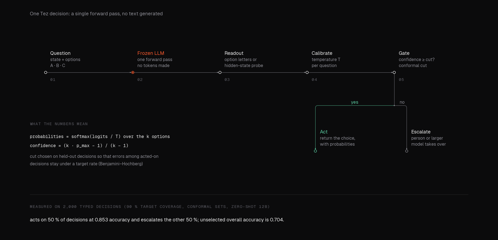
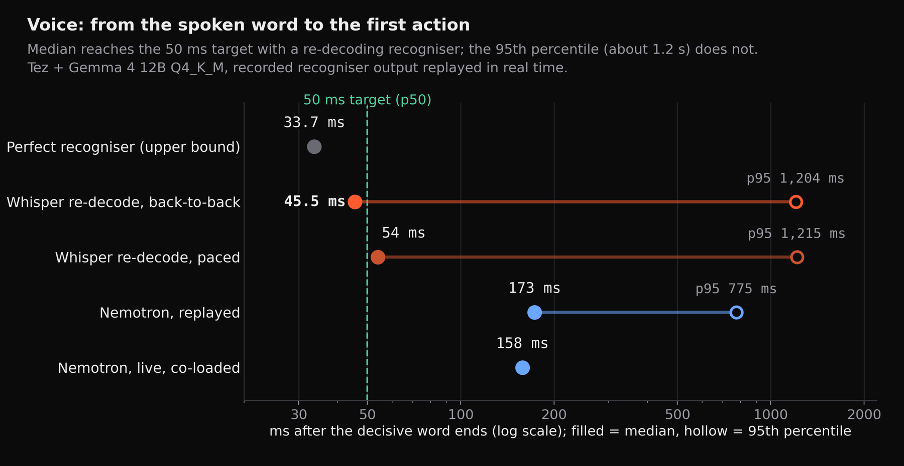
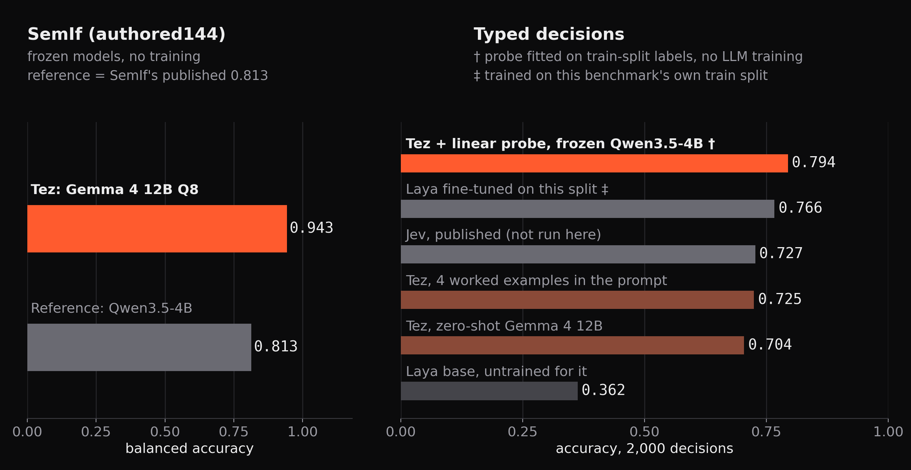
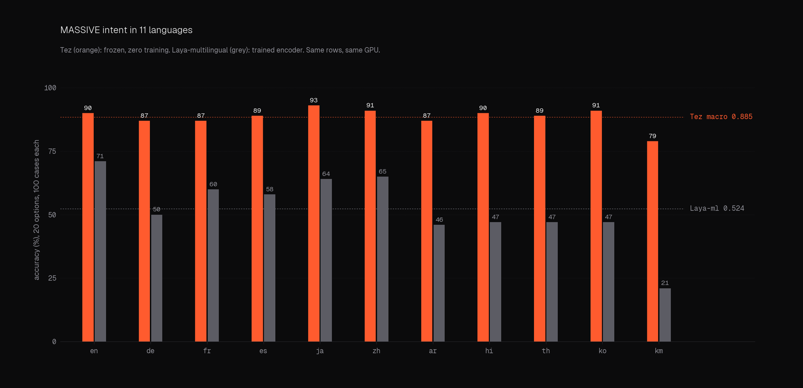
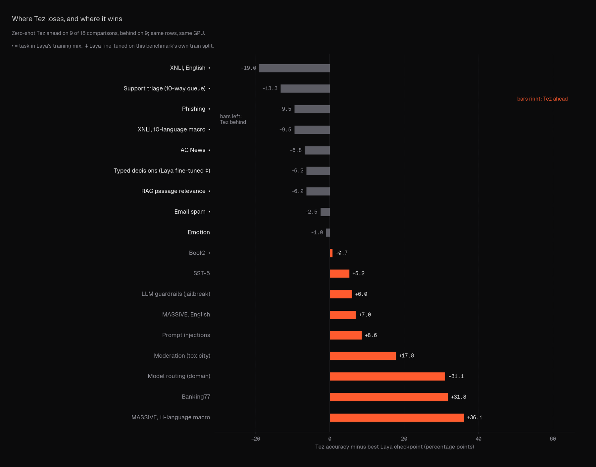

Software · Sep 2026 – present · Open source
Tez
Typed decisions with calibrated confidence from one forward pass of a local model.

- 0.943balanced accuracy on SemIf (reference 0.813)
- 0.885macro accuracy over 11 languages on MASSIVE (reference 0.524)
- 0.794typed decisions with a linear probe trained on the benchmark's labels, frozen 4B model (zero-shot 0.704; hosted model's published 0.727)
- 45.5 msmedian from the decisive spoken word to the first action, on replayed recordings (95th percentile about 1.2 s)
An open alternative to a hosted decision model. A local LLM reads the situation once and returns a typed decision with calibrated probabilities, with no token generation, as a Python package, command line tool and HTTP server with conformal abstention.
01Why it exists
Most agent stacks ask a language model to write a decision out as text and then parse it. Tez asks a different question: given a fixed set of typed options, which one, and how sure? It reads the model's state in a single forward pass and turns it into calibrated probabilities. When it is not sure enough it abstains instead of guessing, and a person or a larger model takes over.
02How it works
The situation and its options go in once. Tez reads the answer from the frozen model's own signals at the option letters, calibrates the scores with a fitted temperature, and applies a conformal threshold that decides whether to act or hand over. No text is generated, which is why a streaming voice demo goes from the decisive spoken word to the first action in a median 45.5 ms, measured by replaying recorded recogniser output through the model (95th percentile about 1.2 s), not on a live microphone.




03Results, in the open
Every number was measured on one machine and comes with the script that produced it. The backbone is frozen; the typed-decisions row uses a small supervised linear probe, so it is not zero-training. On the SemIf benchmark the Gemma 4 12B backbone scored 0.943 balanced accuracy against a reference of 0.813. On the typed-decisions benchmark, Tez zero-shot scores 0.704, below the hosted model's published 0.727 (its own figure; that model was never run here), and 0.725 with four examples. A linear probe fitted on the benchmark's training labels, on a frozen Qwen3.5-4B, reached 0.794, ahead of an encoder fine-tuned on the same training split at 0.766.
Across eleven languages on the MASSIVE intent benchmark, Tez reached 0.885 macro accuracy against 0.524 for the best trained encoder, and all eleven languages were above three times random. Khmer was the weakest, at 0.79 against 0.21 for the trained encoder.




04Where it loses
The page would be dishonest without this. On the XNLI inference benchmark, a trained multilingual encoder is ahead of Tez, 0.794 against 0.699 macro. Tez also trails on AG News (0.880 against 0.948 for the best trained checkpoint) and is a point behind on one emotion set (0.540 against 0.550). Across all 18 comparisons with the best trained checkpoint, Tez is ahead on 9 and behind on 9, and nine of those tasks were in that model's training mix. A language model reading options is not the best tool for every classification job, and the benchmark suite says so in the same table as the wins.


05How it was checked
The comparison models answered byte-identical rows on the same GPU, and the harness reproduces the published SemIf reference exactly (0.8132), though one comparison model did not reproduce its published scores on some application tasks; those rows are marked. Calibration is reported alongside accuracy: macro expected calibration error on the language set is 0.099 as shipped.